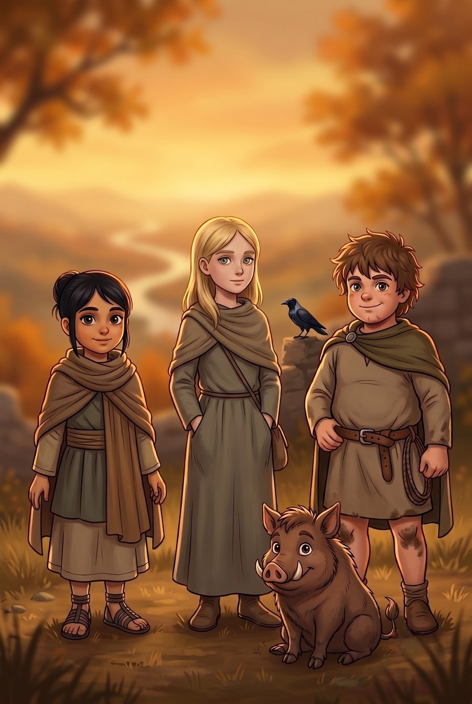
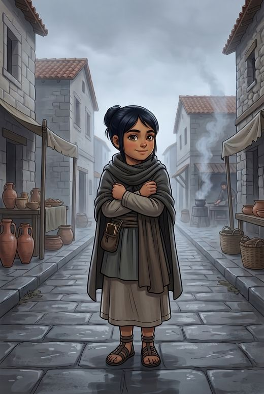
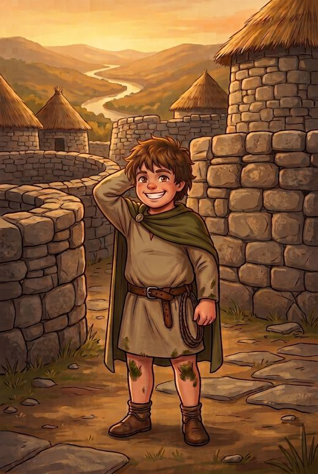
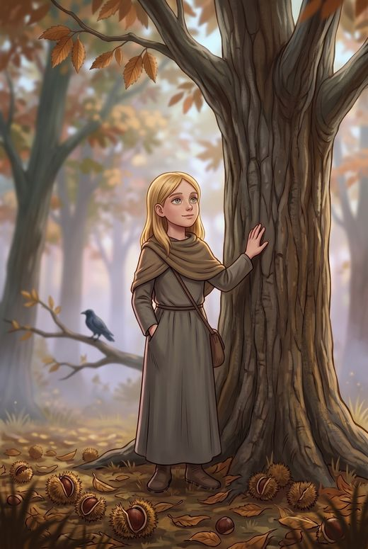
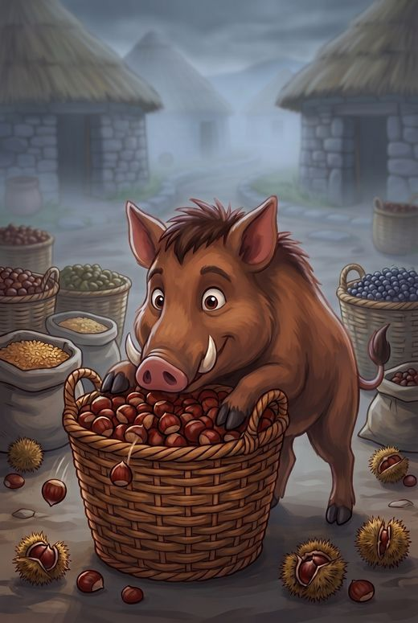
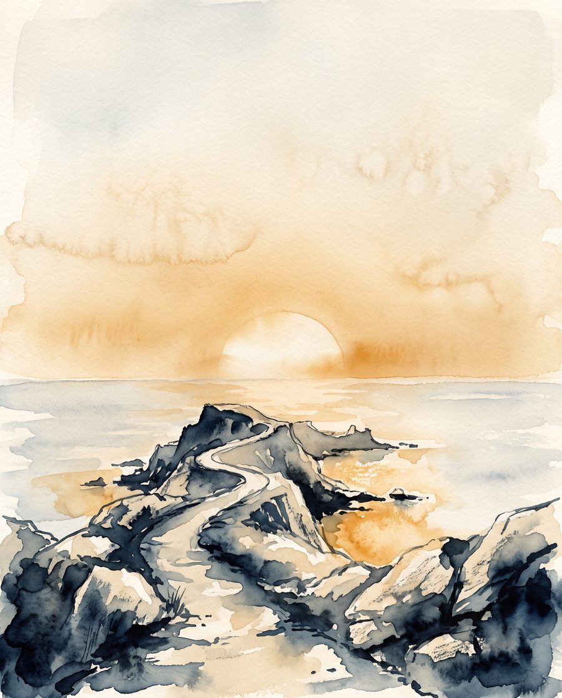

El Confín
Aventuras con algo de verdad dentro.
Leyendas del noroeste hechas cuento, para leer a partir de los diez.

Están los cuatro. Y hay un quinto, si lo buscas.
El libro sale este otoño.
Déjame tu correo y te lo cuento antes que a nadie: quien está en la lista ve la portada y el título primero, el día que se enseñan.
A los diez años te dicen que leas y te dan cosas que no valen la pena. O libros que te hablan como si tuvieras seis, o libros de mayores que todavía no te tocan. Y en medio, poca cosa.
El Confín es un sello pequeño —de una persona, para ser exactos— hecho para llenar ese hueco. Aventuras con algo de verdad dentro: historias inventadas, sí, pero levantadas encima de cosas que ocurrieron o que se contaron de verdad. Leyendas que llevan mil años rodando. Sitios a los que puedes ir este domingo.
Al final de cada libro se explica qué era cierto y qué nos hemos inventado. Eso no es un apéndice: es la mitad de la gracia.
Un río que esconde algo más que peces. Un cielo que aprende a dar miedo de día. Y una noche en la que los mundos casi se tocan: Samaín.
Aventúrate a descubrir las leyendas del noroeste: una forma distinta de vivir el Halloween, con el miedo de fogata y tarde de lluvia — el que calienta más de lo que asusta.
-

Vera
diez años · romana · la que no cree
Mide las cosas. Es su manera de que no le den miedo.
-

Luco
diez años · del castro · el que conoce el bosque
Sabe leer el cielo antes de que llueva. Lo que no domina es su propio cuerpo.
-

Navia
doce años · la que no sabe explicarlo
No habla mucho. Y cuando habla, a veces dice cosas que no tendría manera de saber.
-

Breco
jabalí · el que no piensa dejarlos solos
Nadie lo invitó. Nadie consigue tampoco que se vaya.
La parte de verdad

Los romanos llegaron hasta aquí y creyeron que se habían quedado sin mundo.
Cuando alcanzaron esta costa vieron el sol hundirse en el agua, y le pusieron nombre a lo que tenían delante: Finis Terrae. El fin de la tierra. No era el fin de nada, pero durante siglos fue el borde de lo que se sabía: lo último del mapa, el sitio donde la información se acababa y empezaban las historias.
De ahí sale el nombre de esta casa.
Quién está detrás
pendiente
Me llamo Gervasio, vivo en Ourense, y El Confín soy yo: escribo los libros, elijo las ilustraciones y contesto estos correos.
Escribo esto porque las leyendas de aquí son mejores que casi todo lo que se le da a leer a un niño de diez años, y están contadas para adultos o no están contadas.
Lo que no va a cambiar nunca: al final de cada libro digo qué era cierto y qué me inventé. Aunque estropee el truco.
¿Te lo aviso cuando salga?
Escribo poco y solo cuando hay algo que contar. Te puedes dar de baja en un clic.